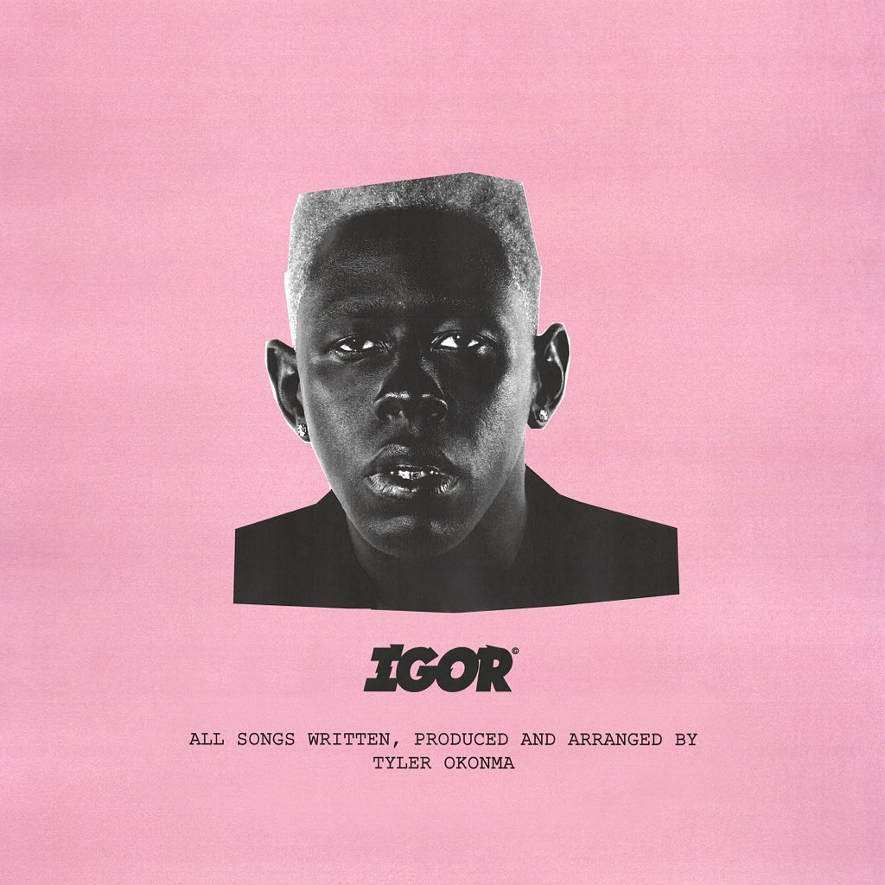

Home
Flower Boy
Astroworld
Rodeo
IGOR
IGOR

IGOR es un álbum subido por Tyler, The Creator en 2019 el cual nos narra la historia ficticia de un mago que se enamora de un hombre y acaba en una relación de amistad con el chico, que en ningún momento se dice quién es.
-TRACKLIST:
·IGOR'S THEME
·EARFQUAKE
·I THINK
·EXACTLY WHAT YOU RUN FROM YOU END UP CHASING
·RUNNING OUT OF TIME
·NEW MAGIC WAND
·A BOY IS A GUN*
·PUPPET
·WHAT'S GOOD
·GONE GONE / THANK YOU
·I DON'T LOVE YOU ANYMORE
·ARE WE STILL FRIENDS?